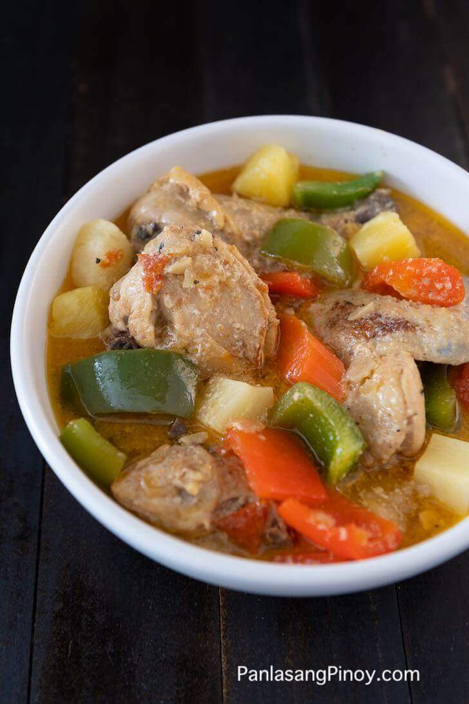

Pininyahang Manok

Pininyahang Manok literally translates to pineapple chicken. This Recipe calls for chicken slices to be marinated in pineapple juice then stewed with pineapple chunks.
Aside from pineapples, secondary ingredients such as carrots, bell pepper, and milk make-up the dish.
This dish is both healthy and delicious. It has a good amount of protein and vitamins.
We can even make it healthier by using healthier types of oil for sautéing.
Ingredients
- 2 lbs chicken
- 12 oz pineapple chunks
- 2 pcs tomato
- 1 cup bell pepper
- 1 pc carrot
- 2 1/2 tbsp fish sauce
- 1/2 cup fresh milk
- 2 tbsp garlic
- 1 pc onion
- 2 tbsp cooking oil
Steps
- Marinate the chicken in pineapple juice/concentrate (derived from the can of pineapple chunks) for 20 to 30 minutes
- Pour the cooking oil in a cooking pot / casserole then apply heat
- Sauté the garlic, onion, and tomatoes
- Put-in the chicken and cook until color of the outer part turns light brown
- Add the pineapple juice/concentrate marinade and fresh milk then bring to a boil
- Add the pineapple chunks and simmer until the chicken is tender and half of the liquid evaporates (about 20 to 30 minutes)
- Put-in the carrots and simmer for 5 minutes
- Add the bell pepper and fish sauce then simmer for 3 minutes
- Remove from the cooking pot / casserole and transfer to a serving dish.
- Serve hot. Share and enjoy!